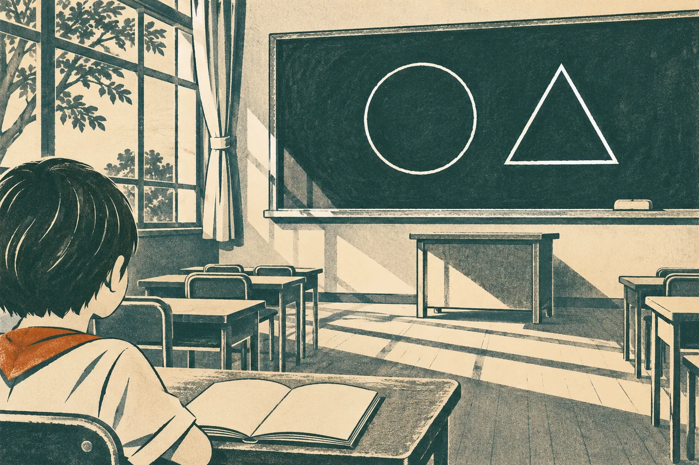

Screening for myopia in childhood

Motivation
A child may read a book comfortably while struggling to see the classroom board. Nearsightedness, or myopia, often begins during the school years, and a mild change can go unnoticed. We wanted to help identify children whose distance vision deserves a closer look.
Prior work
Pediatric vision screening gives families a route from an early concern to an eye examination. The American Association for Pediatric Ophthalmology and Strabismus recommends age-appropriate checks and describes when to refer a child. An eye-care professional can then determine what is affecting the child’s sight.
What we delivered
At Oregon Health & Science University, I help develop a mobile screening app for early signs of childhood myopia. We have built a research prototype intended to flag children who may benefit from a follow-up eye exam.